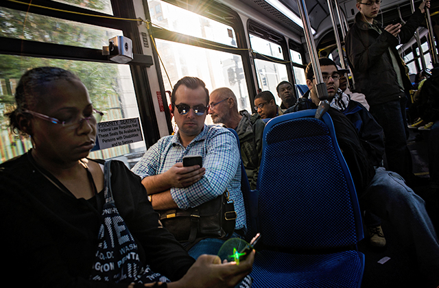

<div class="jumbotron" style="background-color: rgb(8, 6, 14); height: calc(100vh);">
    <div class="container">
      <div class="row" style="padding-left: 0px;height: 200px;">
        <div style="padding-left: 0px;padding-top: 20px;" class="col-6">
          
        </div>
        <div class="col-6">
          <h6 style="color:white;">Clustering VS Ways of Commuting</h6>
          <p style="padding-left: 0px;color:white;font-size: 11px;">
            In urban areas, the movement of people especially people who are employed, can be one of the main reasons for the spread of the COVID-19.
            We have created a dataset by taking in few counties from each state of United States of America that were largely affected by COVID-19. We have tried to analyze if the different types of commuting chosen by the working class 
            has any relation with number of  COVID-19 cases. We look at the four different commuting styles: Public Transport, Carpooling, Drive Alone and by Walk/Foot. 
            <br/>
            To use the graph we  need to chose one particular commuting style and set the percentage of that commuting style and look for results. And by doing so we will find that the spike begins to show up for places which have higher percentage of 
            commuting by public transport.Those counties were majority of people drive alone or walk have lesser cases spike. 
            <br/>
            When you change the range button, you will see the variations in amount of cases.
          </p>
        </div>
      </div>
      <div class="row" style="height:50px; padding-top: 25px;">
        <div class="col-4">
        <label for="myRange" style="padding-left: 0px;color:white;font-size: 15px;">{{chosenCategory}} percentage {{info}} {{percent_left}}%</label>
        </div>
        <div class="col-2">
        <div class="slidecontainer" style="width:150px;padding-top: 2px; padding-right: 5px;">
          <!-- <p style="padding-left: 5px;color:white;font-size: 15px;">Rural area percentage:</p> -->
         
          <input type="range" min="1" max="90" [value]="percent_left" class="slider" id="myRange" (change) = "setRural($event.target.value)">
        </div>
        </div>
        <div class="col-4" style="height:8px;width:500px;padding-left: 5px;">
          <select (change)="optionChangedFor($event.target.value)">
            <option *ngFor="let state of category_left" [value]="state">{{state}}
            </option>
            </select>
        </div>
     
    </div>
    <div class="row" style="height:500px;width:1100px;padding-top: 20px;">
        <canvas style="height:300px;width: 500px;" id='commonCanvas'>{{total_chart}}</canvas>
        </div>
      </div>
     
     
</div>

